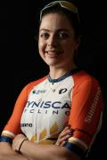

Professional Cyclist
Tour de France Finisher & Irish National Champion
One of the first three Irish women to race the Tour de France

The Story
Born in Metz, France and raised in Limerick, Ireland, Fiona brings a unique blend of engineering precision and athletic talent to professional cycling.
After graduating with a distinction in Biomedical Engineering from NUI Galway and working in cutting-edge implant design at Loci Orthopaedics, Fiona made the bold transition to professional cycling in 2020 — joining Greenmount Cycling Club and rapidly rising through the ranks.
In just five years, she went from club rider to Tour de France finisher. Along the way she became double National Champion in 2024, the first Irish woman to finish a Grand Tour at La Vuelta Femenina in 2023, and in 2025 was one of the first three Irish women to race the Tour de France.
Her 2025 season showcased incredible resilience — after breaking her hand and collarbone in a crash at Omloop het Nieuwsblad, she fought back to finish Paris-Roubaix just weeks later, then went on to win a stage at the Volta a Portugal and ride a 100km breakaway at the Tour de France. She also represented Ireland at the UCI Track World Championships, targeting LA 2028 Olympic qualification in the team pursuit.
Fiona speaks English, French, and Spanish fluently — an asset in the international world of professional cycling. She currently races with Mayenne Pro Cycling.
Performance
| Result | Race | Year |
|---|---|---|
| Finisher | Tour de France Femmes avec Zwift | 2025 |
| 66th Stage | Tour de France Femmes – Stage 7 (100km breakaway, intermediate sprint winner) | 2025 |
| Finisher | Paris-Roubaix Femmes | 2025 |
| 6th | National Championships Ireland – Road Race | 2025 |
| 12th | UCI Track World Championships – Individual Pursuit | 2025 |
| 13th | UCI Track World Championships – Team Pursuit (Ireland) | 2025 |
| 7th | UEC European Track Championships – Team Pursuit (Ireland) | 2026 |
| 3rd | National Championships Ireland – Road Race | 2022 |
| 8th | Clasica de Almeria | 2024 |
| 5th Stage | Bretagne Ladies Tour | 2024 |
| 7th Stage | Tour Cycliste Feminin International de l'Ardeche | 2023 |
| 7th | National Championships Ireland – Road Race | 2023 |
| 9th Stage | Baloise Ladies Tour | 2024 |
| 10th | Egmont Cycling Race Women | 2023 |
| 10th | GP Lucien Van Impe | 2024 |
| 10th | National Championships Ireland – Road Race | 2020 |
| 6th | National Championships Ireland – ITT | 2021 |
| 7th | National Championships Ireland – Road Race | 2021 |
Journey
Signed with the renamed Mayenne Pro Cycling squad. Represented Ireland at the UEC European Track Championships in Konya, Turkey — team pursuit squad improved by 10 seconds on 2025 Worlds time, targeting LA 2028 Olympic qualification.
A season of resilience and historic firsts. Broke her hand and collarbone at Omloop het Nieuwsblad but fought back to finish Paris-Roubaix weeks later. Won the queen stage at Volta a Portugal. One of the first three Irish women to race the Tour de France Femmes — rode a 100km breakaway on Stage 7 and won the intermediate sprint. Made her track debut at the UCI World Championships in Santiago, Chile (12th individual pursuit, 13th team pursuit).
Double National Champion — won both the Irish Road Race and Time Trial Championships. Top 10 finishes at Clasica de Almeria, Baloise Ladies Tour, and GP Lucien Van Impe.
Made history as the first Irish woman to finish a Grand Tour at La Vuelta Femenina. Stage results at Tour de l'Ardeche.
Bronze medal at National Championships Road Race. First year competing at UCI Continental level.
Rapid development year with top-10 finishes at National Championships in both road race and time trial.
Transitioned from Biomedical Engineering career to competitive cycling. Top-10 finish at National Championships in debut year.
In the Press
First Irish rider to win an intermediate sprint at the Tour de France Femmes.
In-depth feature on Fiona's Tour de France journey and her path from engineer to elite cyclist.
Extensive coverage — from the Omloop crash and comeback at Paris-Roubaix to the 100km Tour de France breakaway.
Partnerships
As a Tour de France finisher, National Champion, and Irish track team member with a growing international profile, Fiona offers brands authentic, high-visibility exposure across European professional cycling and track events.
Tour de France finisher. National Champion. Track team athlete. Targeting LA 2028.
Get in TouchConnect
For team inquiries, sponsorship opportunities, or media requests:
fifimangan@gmail.com